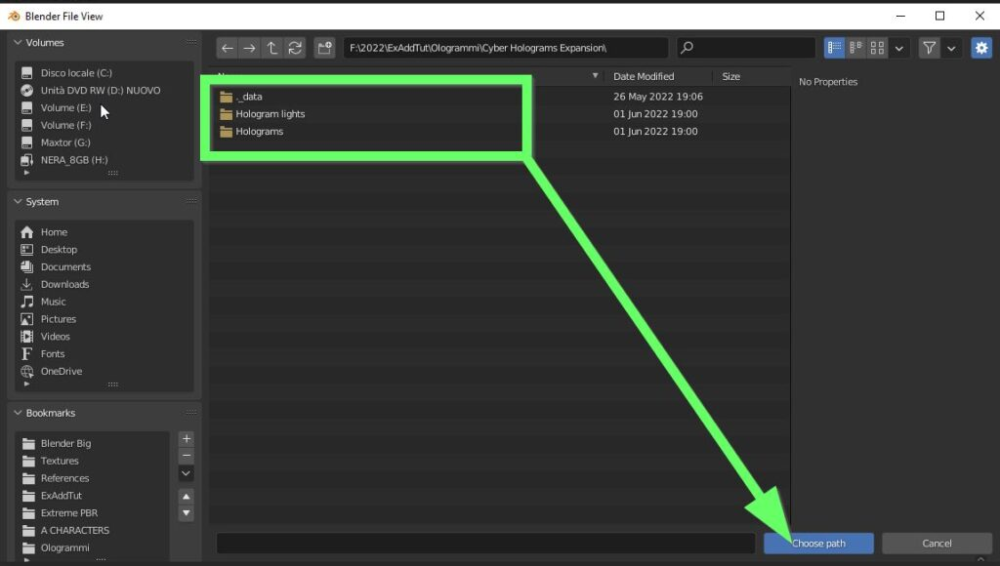

Installation
Welcome to the installation guide for Holograms Expansion
Note
Cyber Holograms contains 3 file versions , you will find the following in your downloads:
Cyber Holograms Asset Browser For Blender 3.2 to 3.6.zip
Cyber Holograms Asset Browser For Blender 4.0 and Up.zip
Cyber Holograms Expansion for Extreme PBR.zip (new version of the expansion library 1.1 released on 16 April 2024) The version for Extreme PBR is not for the Blender Asset Browser.
Pay attention to which version you want to install, if you have any doubts please proceed with this guide.
Install into Extreme PBR
Important
It is recommended to have installed a version of Extreme PBR equal to or greater than 4.1.124 From this version of Extreme PBR you can also check which version of the library is installed:
{kind=link}
Download the necessary files
Download the zip file named Cyber Holograms Expansion for Extreme PBR.zip
Extract the content of the zip file into a folder of your choice on your computer (Avoid the path where Blender installs the addons)
Add Expansion into Extreme PBR
To add the expansion to Extreme PBR, open Extreme PBR and press on Options > Library Management > Add Library
{kind=link}
Set a name for the new Library, i.e. Holograms
{kind=link}
Press Choose path and select the folder

Double click on the folder to open it, then press the “Choose path” button
{kind=link}
You will find the new Library in the Libraries dropdown menu

Once selected you’ll have access to all different Hologram and Light Rays materials

Install into Asset Browser
Note
As mentioned earlier, pay attention to which version of Blender you are using, and choose the correct version of Cyber Holograms Asset Browser, if for example you are using Blender 4.1 or higher, download the zip file Cyber Holograms Asset Browser For Blender 4.0 and Up.zip
Here is a video tutorial on how to install the version for the asset browser in Blender
Add a new Asset Library
In Blender, go to edit–>preferences–>File paths and click on the plus button to add an Asset Library
{kind=link}
Locate the Cyber Hologram Assets folder
Once you press the plus button, a browser window will open, here you will have to locate the Cyber Hologram Assets folder
{kind=link}
Double click to open it and then press the Add Asset Library button